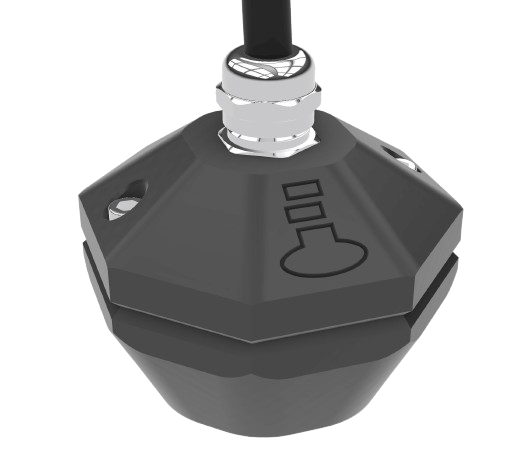
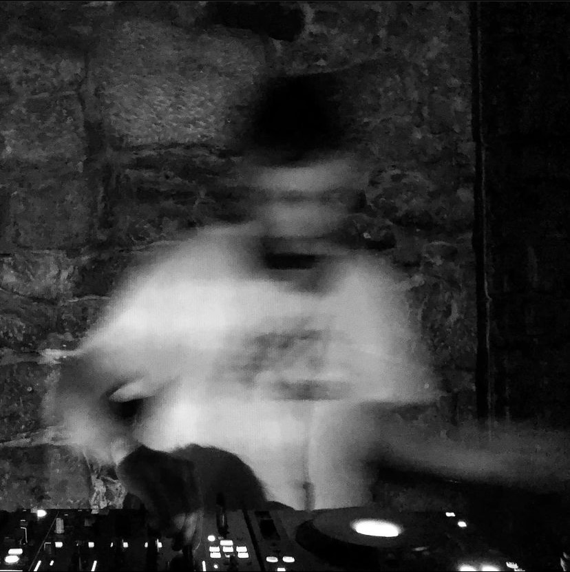
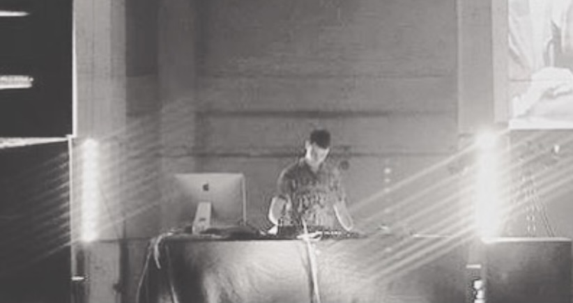
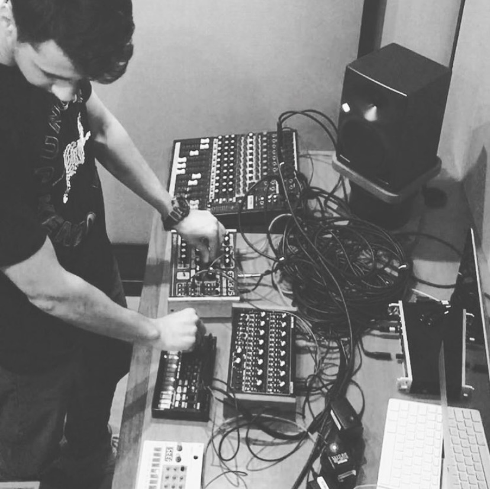
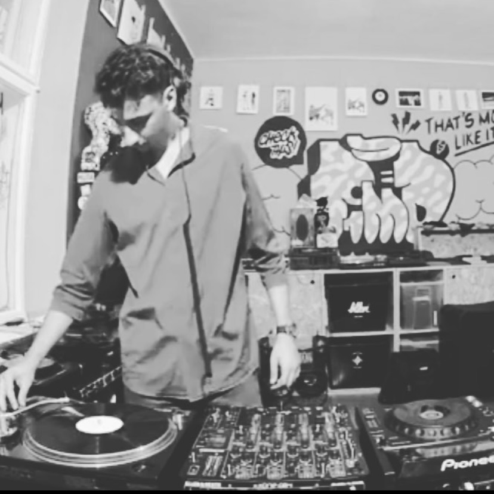

Through my aliases I explore different sonic identities: LESEL focuses on experimental electronic textures, while Addison Gardens opens space for blending guitar, improvisation, and live performance approaches.
Custom Instruments & Performances
I sometimes build my own bespoke microphones to record in specific environments.
For more information, please visit
atomatlab.com
 .
.
My sound work has been presented in contexts such as Sound Campus – Open Stream, Linz, AT, where my piece Ruined Resonances was performed throughout Ars Electronica, and in RADAR 2023, Bucharest, RO, where I performed Sonic Imprints, an interactive audio-visual performance transcribing frequencies with a pen plotter.


LESEL




Addison Gardens
A project for experiments with sound — including guitar, live sets, and compositions outside of house frameworks.